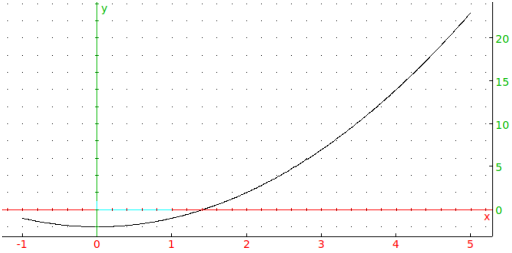
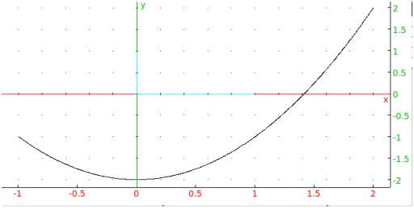
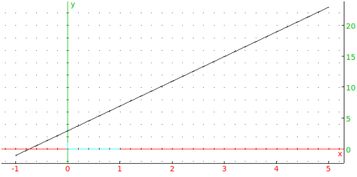
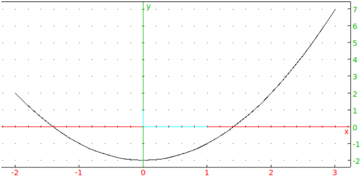

7.4.1 2-d graph
The plotfunc command draws the graph of a function.
funcplot is a synonym for plotfunc.
plotfunc can draw the graph of a one-variable function or a
two-variable function; this section will discuss one-variable
functions and the next section will discuss two-variable functions.
-
plotfunc takes one mandatory argument and two
optional arguments:
-
expr, an expression defining a function.
- Optionally, var, the variable name (by default
x) possibly with bounds. If the variable is given as
var=a..b, the graph will be drawn from a to b,
otherwise it will be graphed over the default interval
(see Section 2.5.8).
- Optionally, opt, which can be
xstep=n to specify the discretization
step or nstep=n to specify the number of points used to
graph.
- plotfunc(expr,var ⟨opt⟩)
draws the graph.
Examples
-
Input:
plotfunc(x^2-2)
Output:

- Input:
plotfunc(a^2-2,a=-1..2)
Output:

- Input:
plotfunc(x^2-2,x,xstep=5)
Output:

- Input:
plotfunc(x^2-2,x=-2..3,nstep=30)
Output:
